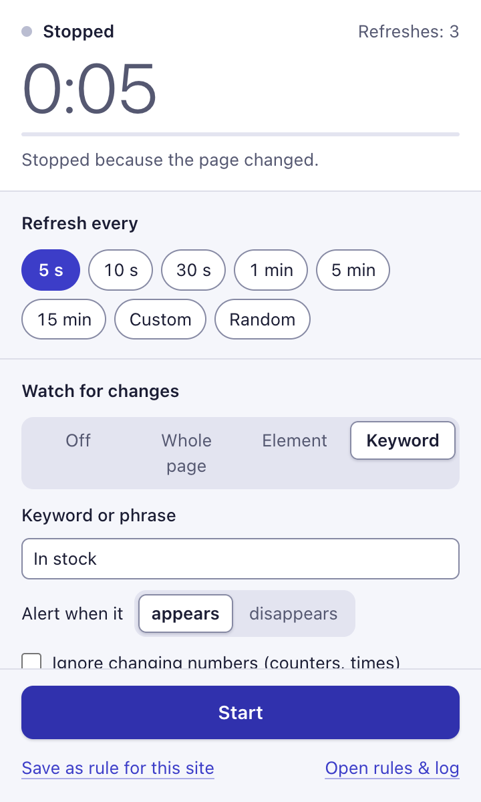

Appointment slot alert for visa and booking pages
Waiting for a visa appointment, a test date or any booking slot to open? RefreshWatch reloads the booking page in Chrome, can press “Next month” for you, and alerts you when “No appointments available” is gone.
Set up an appointment alert in three steps
- Sign in and open the page that shows availability. Click the RefreshWatch icon and choose Appointment under What are you waiting for? That sets a random interval between 2 and 4 minutes, a Keyword watch that alerts when “No appointments available” disappears, an alarm sound, bringing the tab to the front, and stopping on a match.
- Change the phrase to the page's exact wording, such as “No slots available” or “There are no available appointments”. If free dates only show after you press a button, open More options, turn on Click after reload, pick the “Next month” button (add a second click, such as “Search”, if needed), and choose Before reading the page.
- If you've set up a phone destination, check that Send to my phone is on (the preset turns it on for you). Click Start. Chrome asks to let RefreshWatch read that one site; allow it.

When the phrase disappears you get a desktop notification and an alarm, the tab comes to the front, and refreshing stops, so the page stays as it was. The auto refresh and click guide explains the click steps in more detail.
Before you leave it running
- Logouts look like a slot. Booking sites often sign you out after a while. The sign-in or “session expired” page doesn't say “No appointments available” either, so you get an alert. Always look at the tab before you rush. If the sign-in page is on a different site, RefreshWatch stops because the tab left the site.
- Captchas and forms. RefreshWatch doesn't solve captchas, fill in forms, sign you in or book anything. It tells you; you book.
- Booking-site rules. Many visa and government booking systems limit how often you may check, and some forbid automated tools or lock accounts that reload too often. Read the site's terms first. Keep the preset's 2 to 4 minutes or slower, and stop the watch when you no longer need it. You're responsible for how you use it on each site.
Get the slot alert on your phone
Slots open at odd hours. With Send to my phone on, the alert also goes to ntfy, Discord, Telegram, Slack or any webhook, as long as Chrome stays open on your computer. The phone alerts guide has the steps.
Good to know
RefreshWatch checks the booking page in an open tab, while Chrome is running and your computer is awake. Keep that tab open.
Chrome slows down tabs that have been in the background for more than 5 minutes, so a check with clicks there can run late. A check that takes longer than two minutes is stopped and tried again on the next refresh.
Some booking sites block reloads they think are automated. If the page starts showing an error, stop and wait before trying again.
Waiting for something else? See the restock alert guide and the website change alert guide.
Questions
Will RefreshWatch book the appointment for me?
No. It reloads the page, can press buttons you picked such as “Next month”, and alerts you. Booking, forms and captchas are up to you.
Why did I get an alert but there's no slot?
Usually the site signed you out or showed an error page. Those pages don't contain “No appointments available” either, so the phrase counts as gone. Sign in again and restart the watch.
How often should it check for appointments?
The Appointment preset reloads at a random time between 2 and 4 minutes. Booking sites often limit or block frequent checks, so don't go much faster, and follow the site's rules.
Can it check the next month's calendar?
Yes. Turn on Click after reload, pick the “Next month” button, and choose Before reading the page. You can add up to five clicks, such as “Next month” and then “Search”.
Does it work when my computer is asleep?
No. Chrome has to be running with the booking page open in a tab. Keep the computer awake, and turn on phone alerts to hear about a slot while you're away.